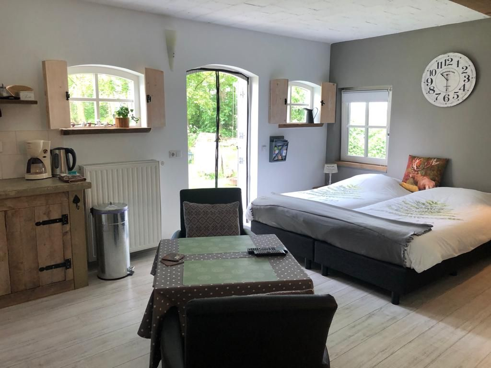
De Taskamer
Uitzicht op de kippenweideLandelijke kamer met eigen badkamer en keukenblok. U kijkt uit over de kippenweide en stapt zo uw eigen tuin met terras in.
€ 130 per nachtMeer info
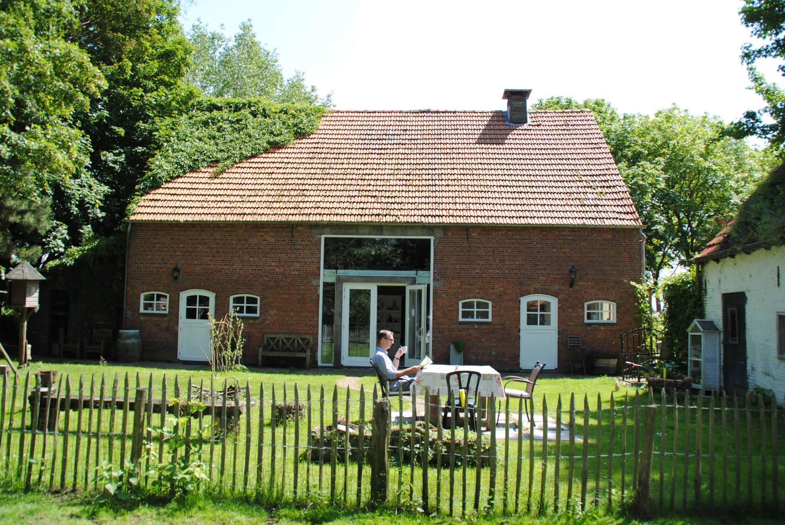
Drie sfeervolle verblijven in een oude boerenschuur, midden in het groen tussen Hulst en Axel. Elk met een eigen ingang en een eigen tuin of terras.
Alle drie op de begane grond en voor maximaal 2 volwassenen. Vernoemd naar wat de ruimte vroeger in de schuur was.

Landelijke kamer met eigen badkamer en keukenblok. U kijkt uit over de kippenweide en stapt zo uw eigen tuin met terras in.
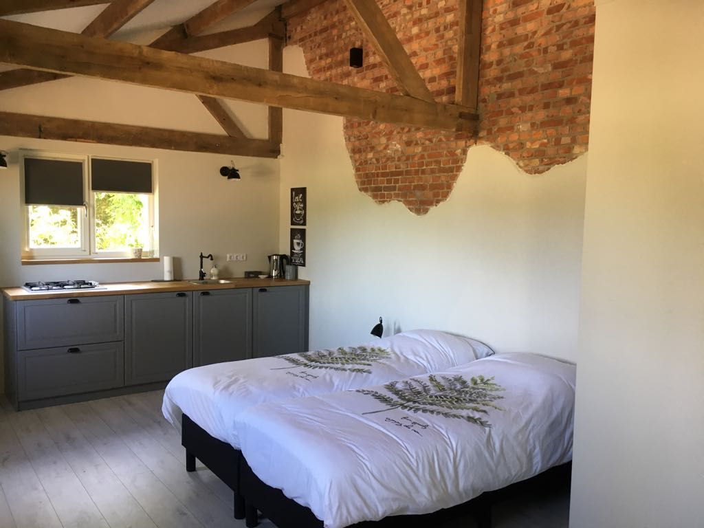
Ruim verblijf met oude, authentieke details, een zithoek en een eigen terras met een landelijk uitzicht.
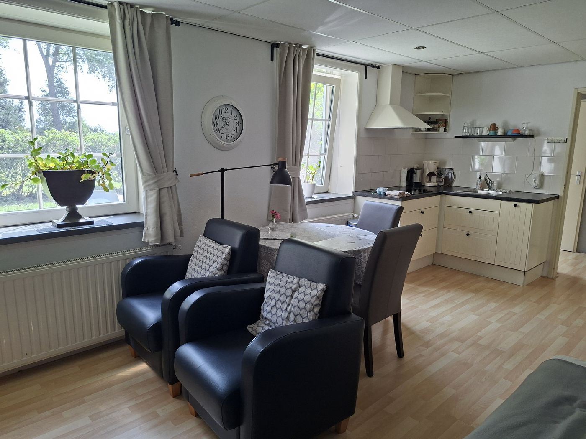
Ruime studio met eigen hal, badkamer, apart toilet en keukenblok. In principe geschikt voor minder valide gasten.
De schuur ligt op een perceel van 2 hectare in het buitengebied. U wandelt zo door de bostuin, langs de vijver en de kippenweide, tussen de vele dieren die hier hun habitat hebben.
Ons motto is "rust, ruimte & onthaasten". Daarom ontvangen we alleen volwassenen, zonder kinderen en huisdieren.
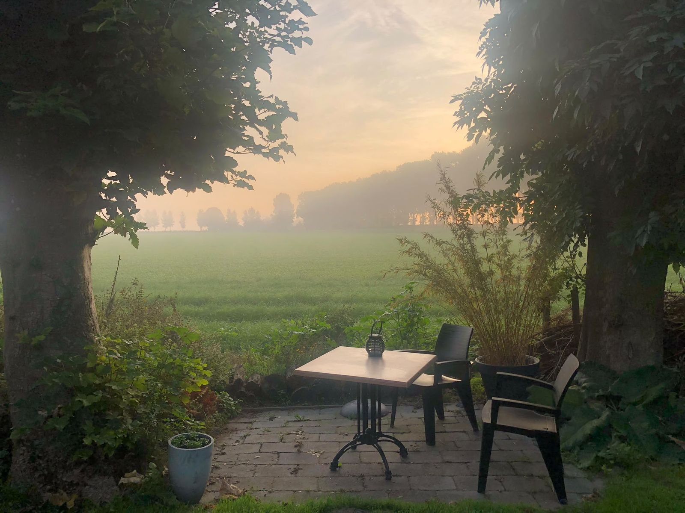
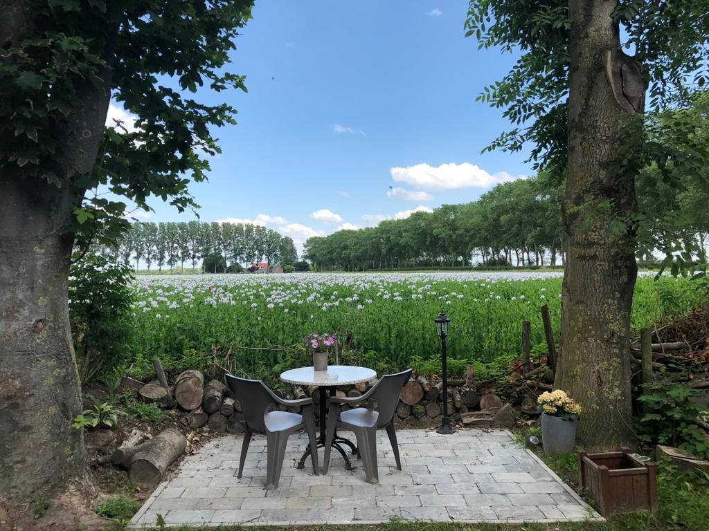
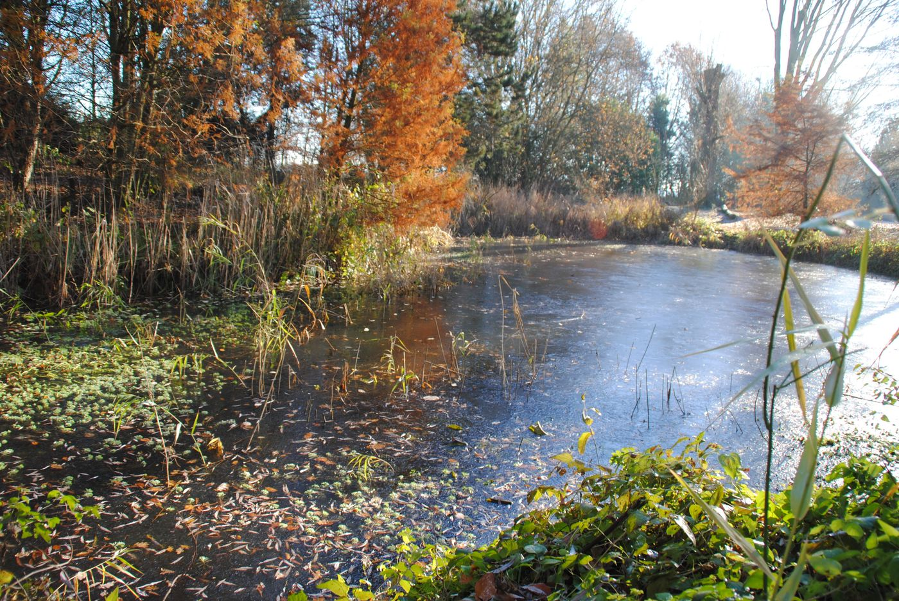
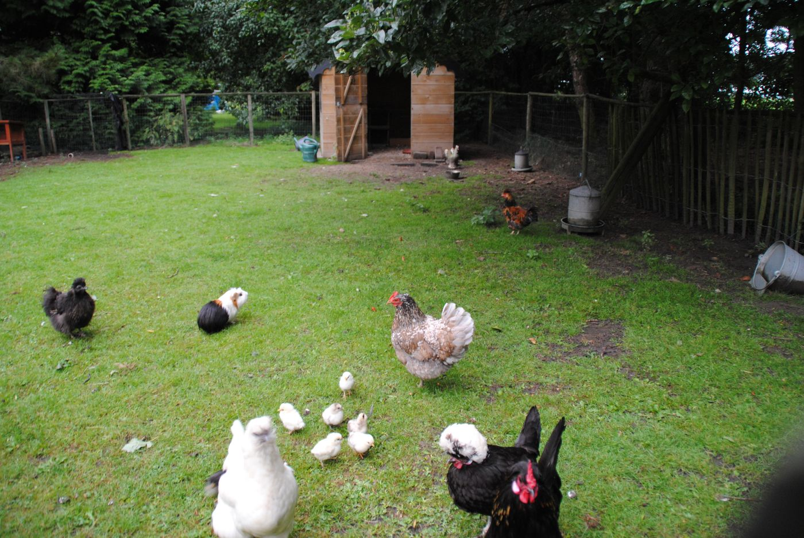
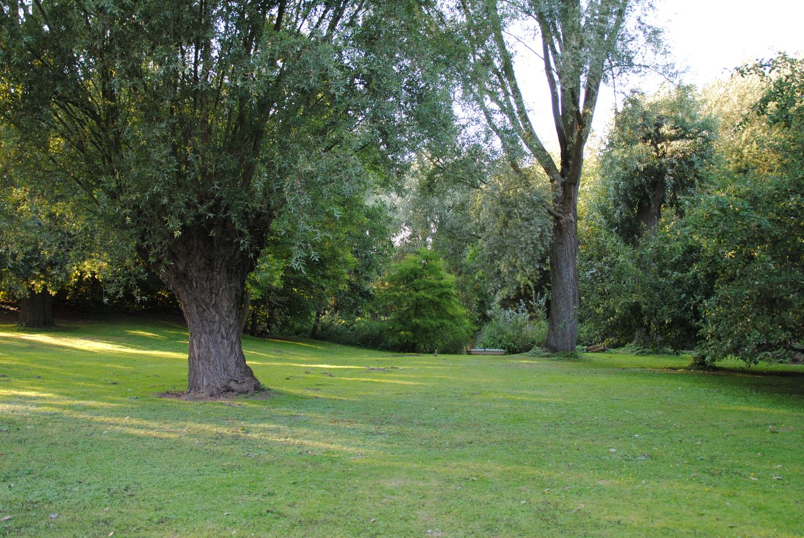
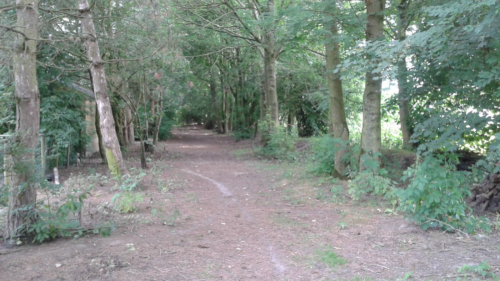
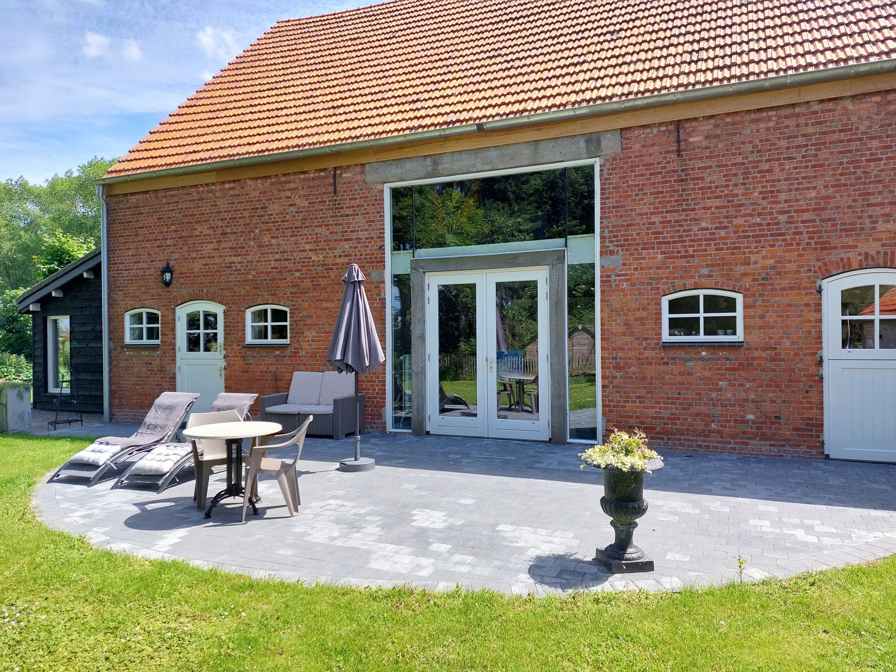
De voormalige koestal is nu een sfeervolle workshopruimte. Kom met vriendinnen, buren of collega's: we beginnen met koffie of thee met iets lekkers, daarna maakt u zelf een seizoensstuk om mee naar huis te nemen.
Een rijkelijk gevulde herfstkrans maken, onder het genot van een verwenkoffie.
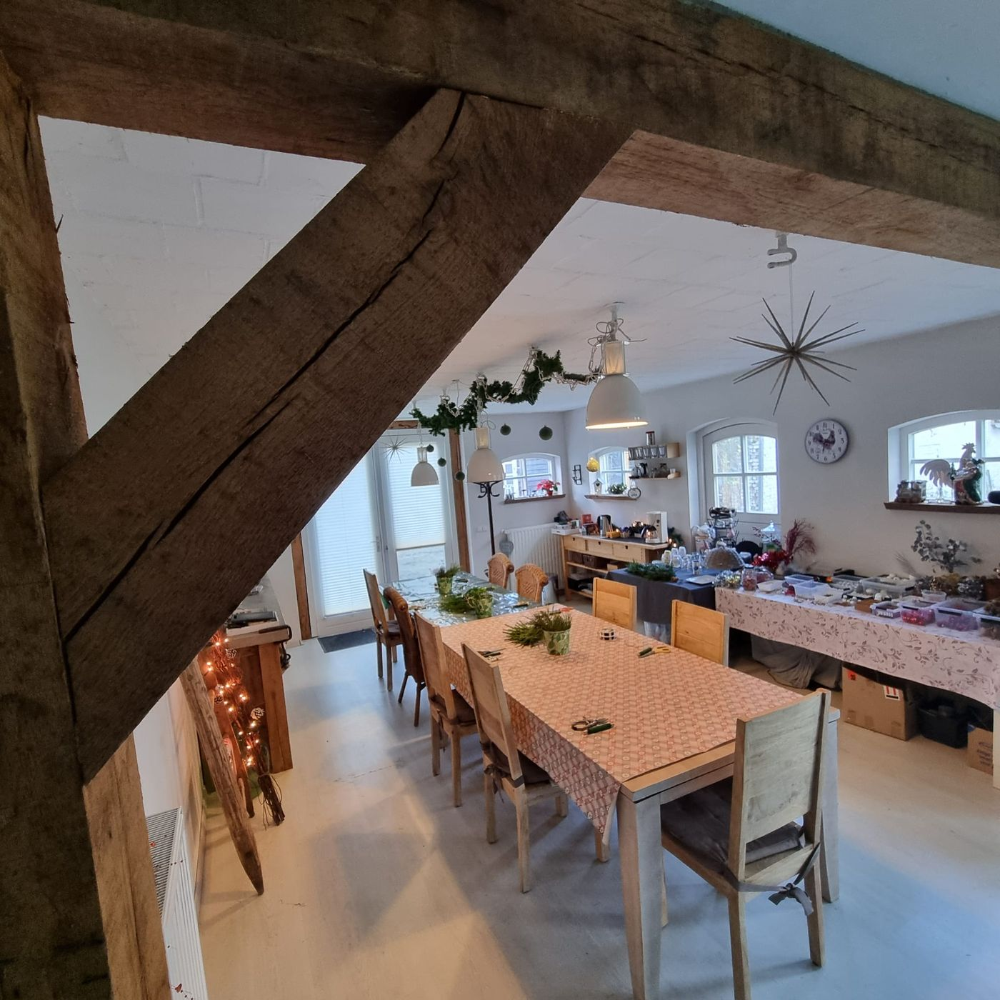
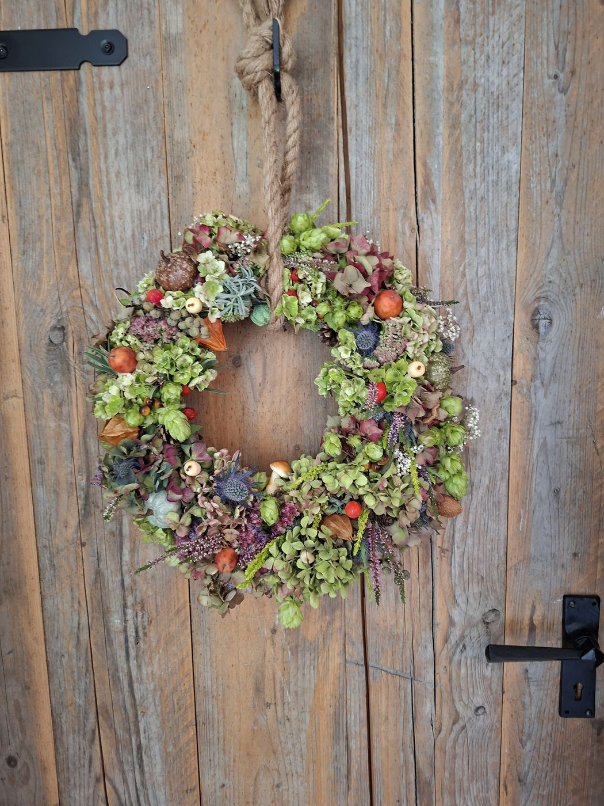
Fietsen langs oude vestingstadjes, wandelen bij Saeftinghe of een dagje Gent: het ligt allemaal dichtbij. Routekaarten kunt u bij ons lenen.
Zoals de Staats-Spaanse Linies (68 km) over liniedijken en langs oude forten, of door de vestingsteden Hulst en Axel (51 km).
Zeker de moeite van een bezoek. Het informatiepunt in Hulst heeft nog veel meer tips voor activiteiten.
Bourgondische steden op korte afstand. Winkelen, een hapje eten en genieten van de bezienswaardigheden.
Op slechts 1 km afstand. Over de strijd om de Gdynia-brug in september 1944.
Een 18-holes golfbaan in natuurgebied Smitsschorre, aan de rand van Axel.
Ook op zondag zijn de winkels open. Of bezoek het bekende meubelplein Morres.
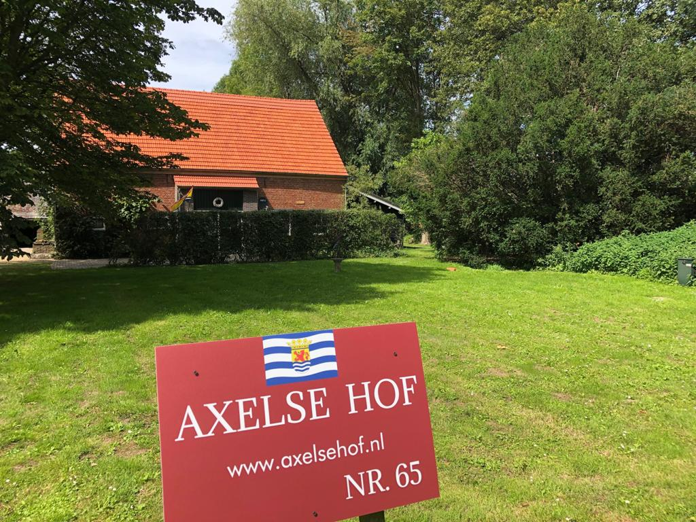
Na jarenlang dienst te hebben gedaan als koestal, opslag en paardenstal hebben we de oude Zeeuwse boerenschuur omgetoverd tot een landelijke logiesaccommodatie. Authentieke details hebben we daarbij bewaard en hersteld.
"Wij beheren de accommodatie hobbymatig, echt voor ons plezier! Het geeft ons energie om mensen te verwelkomen die hier kunnen genieten zoals wij dat zelf ook doen."Eugène en Audrey de Vetter
Stuur een reserveringsaanvraag of stel uw vraag. U krijgt binnen 1 dag antwoord.
Mail wordt snel beantwoord. Telefonisch zijn we niet altijd direct bereikbaar.